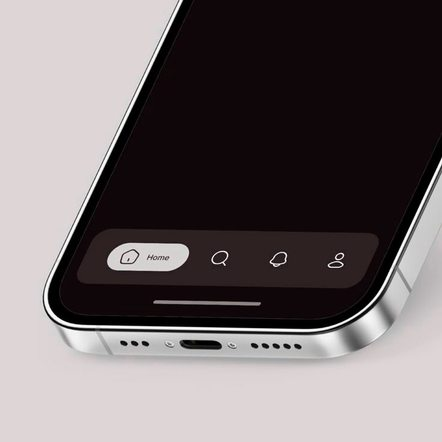
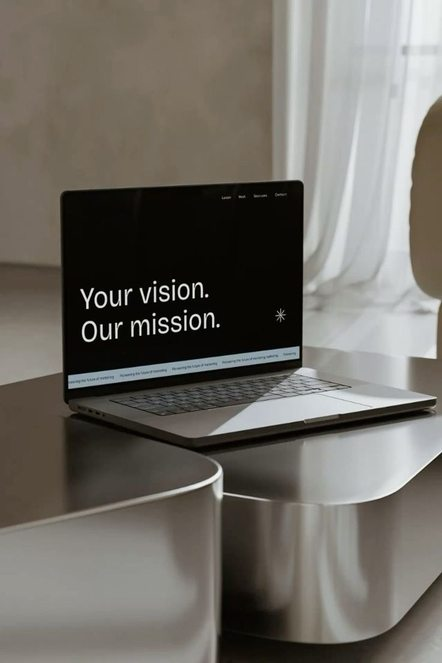
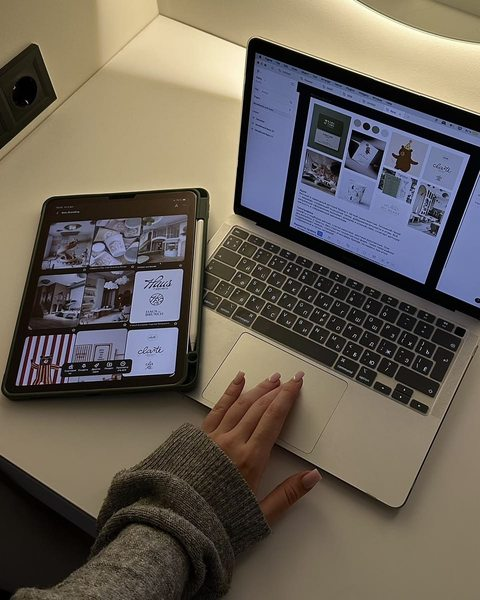
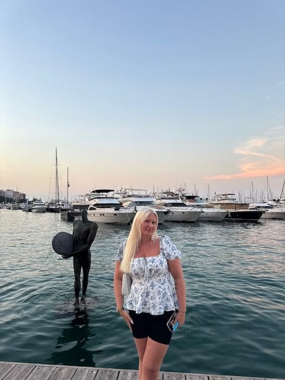

Hej!
Om mig
Det är jag som är Josefine, och jag studerar just nu Experience Design på Futuregames.
Jag fastnade för UX eftersom det kombinerar kreativitet med problemlösning och fokuserar på hur människor faktiskt använder digitala produkter.
Min erfarenhet av att arbeta i butik och från min tidigare utbildning inom stylistprogrammet har gett mig en god förståelse för människor, deras behov och hur man upplever olika situationer.
Jag drivs av att förstå hur människor interagerar med digitala produkter och hur små designbeslut kan göra stor skillnad i upplevelsen, samt förståelsen för andras behov.
Fokusområden
Designintresse



Utvalda arbeten
Projekt
Fem projekt där jag har gått från research och analys till prototyper och användartester.
Projekt 1 / 5
Helsingborgs hemsida
Arbetsmarknadsförvaltningen
Ett samhällsproblem omsatt till en webbsida: Förbättra din självkänsla.
Low-fi-prototyp
Problem
I low-fi-prototypen gjorde mycket text och otydliga knappar innehållet svårt att ta till sig, och användaren blev osäker på hur hen skulle navigera. Inläggen blev ett förvirringsmoment.
Mål
Skapa inspirerande innehåll med funktionella knappar som är enkla att förstå, och en mer lättförståelig upplevelse där innehållet är enklare att överblicka.
Process
Genomförde användartester och en enkät i Google Forms, och samlade in data om användarnas behov.
High-fi-prototyp
Process
Utgick från den tidigare prototypen och insamlad data för att förstå vad som behövde förbättras. Tidigare tester gav en tydlig utgångspunkt, så jag kunde fokusera på struktur och tydlighet utifrån användarens behov.
Resultat
Tydligare struktur och bättre placering av rubriker och knappar. Hovereffekter gör interaktionen tydligare. En lättare och mer sammanhängande layout, och en mer framträdande knapp gör det enklare att navigera och förstå sidans funktion.
Projekt 2 / 5
Duro.se
Svenska Tapetmästare
Ett förbättringsförslag med fokus på navigation, struktur och tillgänglighet, anpassat för WCAG 2.1 AA.
Struktur & layout
Problem i originalet
Svår navigation och rörig layout gjorde sidan svår att använda, och den uppfyllde inte tillgänglighetskraven i WCAG 2.1 AA.
Mål
Skapa en tydligare och mer användarvänlig struktur som uppfyller tillgänglighetskraven i WCAG 2.1 AA.
Process
Användartester och analys identifierade problem i navigation och struktur, som låg till grund för förbättringarna.
Resultat
En mer strukturerad layout med enhetlig bildstorlek och tydligare funktioner. Navigeringen förbättrades genom att förenkla innehållet och förtydliga typografin.
Texttunga sidor
Problem i originalet
En texttung layout som gjorde sidan svår att ta till sig och överblicka, och som inte var anpassad för tillgänglighet.
Resultat
Ändrad layout på textmassan och klickbara rubriker som tar en direkt till rätt stycke, vilket gör det enklare att överblicka.
Hjärtat
Problem i originalet
Hjärtat gick inte att interagera med och gav ingen direkt feedback.
Mål
Göra hjärtat till en tydlig och interaktiv funktion som ger direkt feedback.
Resultat
Hjärtat placerades mer synligt och gjordes interaktivt. Det byter färg vid klick, syns i navigationsmenyn och lägger automatiskt till produkten i önskelistan.
Projekt 3 / 5
Vilike.fi
Kamerabaserat rörelsespel för barn
Förbättrad onboarding och rörelsefeedback i ett kamerabaserat spel för barn.
Utgångsläget
Problem
Berättelsen presenterades i långa textstycken som krävde mycket läsning. Instruktionerna för rörelser var inbäddade i texten och saknade tydlig visuell guidning, så barnen hade svårt att snabbt förstå vad de skulle göra.
Mål
Omvandla de textbaserade instruktionerna till en visuell och intuitiv upplevelse där barn snabbt förstår vad de ska göra, med stöd av animationer och tydliga visuella signaler.
Rörelsefunktionen
Mål med ny lösning
Skapa en tydlig och engagerande rörelsefunktion där barn direkt förstår vad de ska göra, får snabb feedback och känner motivation att fortsätta.
Process
Analyserade den befintliga prototypen, identifierade problem i onboarding och rörelseigenkänning och genererade idéer tillsammans med teamet.
Resultat
En förbättrad rörelsefunktion med visuella instruktioner, direkt feedback och uppmuntrande respons. I användartester av den nya prototypen förstod barnen snabbare vad de skulle göra och blev mer motiverade att fortsätta spela.
Berättelseflödet
Process
Analyserade den befintliga prototypen, identifierade problem och arbetade vidare med idégenerering i teamet.
Resultat
Upplevelsen blev mer visuell och lekfull: mindre text och fler animationer och tydliga visuella signaler. Det gjorde flödet enklare att förstå och mer engagerande.
Projekt 4 / 5
AcadeMedia
Lärplattform
En förbättrad lärplattform, gjord med mina egna kunskaper och färdigheter.
Projektet omfattas av sekretess, så endast utvalda vyer visas.
Mål med ny lösning
Skapa en modernare och mer användarvänlig lärplattform där elever och personal enkelt hittar kurser, material och viktig information, med bättre struktur och ökad tillgänglighet.
Process
Analyserade den befintliga plattformen, identifierade användbarhetsproblem och tog fram en ny informationsstruktur.
Resultat
En mer överskådlig och lättnavigerad plattform med bättre struktur, modernare design och enklare åtkomst till innehåll. Användarna hittar rätt information snabbare och upplevelsen blir mer effektiv.
Före & efter: startsida
Före & efter: kursöversikt
Projekt 5 / 5
Speldesign
Last Exit · Alessia, Josefine och Sevan
Ett speldesignprojekt med fokus på idéutveckling, AI som verktyg, prototypande, användartester och iteration.
Mål
Uppgiften var att utveckla ett eget digitalt spel med tydliga regler, mål och spelmekanik. Spelet testades flera gånger och förbättrades utifrån feedback från användartester.
Process
Vi tog spelet från idé och skiss till färdig prototyp. AI användes som stöd och byggde spelet utifrån våra idéer och behov.
Resultat
Resultatet blev Last Exit, ett interaktivt zombiespel där spelaren utforskar olika miljöer, genomför uppdrag, möter fiender och samlar resurser.
Vad jag kan
Färdigheter
Hur jag jobbar
Metoder
- Användarintervjuer
- Användartester
- Enkäter
- Personas
- Customer journey maps
- Wireframes
- Prototyping
- Jobs to be done
- Site maps
- Idégenerering
- AI
Hör av dig
Kontakt

Tack för att du tagit del av mitt arbete <3
JOSEFINE PETERSON